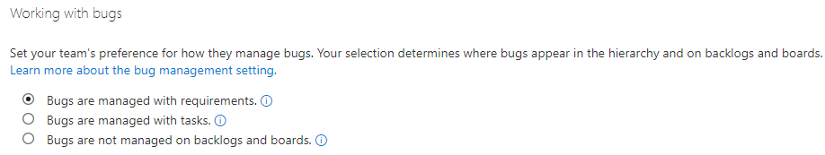

Azure DevOps General - Working With Bugs
Azure DevOps Boards'da "Genel - Hatalarla Çalışma" ayarlarını kullanarak aşağıdaki işlemleri gerçekleştirebilirsiniz:
- Hataları izleme: Azure DevOps Boards'da hataları izleyebilir ve bunları yönetebilirsiniz. Hataları tahtaya ekleyebilir, atayabilir, durumlarını güncelleyebilir ve takip edebilirsiniz.
- Hata önceliklerini belirleme: Hataların öncelik seviyelerini belirleyebilirsiniz. Örneğin, kritik, yüksek, orta veya düşük gibi öncelik seviyelerini tanımlayabilirsiniz.
- Hata durumlarını yönetme: Hataların durumlarını özelleştirebilirsiniz. Örneğin, "Açık", "Devam Ediyor", "Çözüldü" gibi durumlar oluşturabilir veya var olan durumları düzenleyebilirsiniz.
- Hatalara etiket ekleyebilme: Hatalara ilgili etiketleri ekleyebilirsiniz. Bu sayede hataları kategorize edebilir, takip edebilir ve filtreleyebilirsiniz.
- Hataları raporlama ve analiz etme: Azure DevOps Boards'da hatalarla ilgili raporlar oluşturabilir ve analiz yapabilirsiniz. Bu sayede, hataların durumunu, önceliğini ve diğer özelliklerini görsel olarak takip edebilirsiniz.
Genel - Hatalarla Çalışma ayarları, Azure DevOps Boards'da hataları etkili bir şekilde yönetmenizi ve takip etmenizi sağlar. Bu sayede, hataları hızlı bir şekilde çözebilir, ekipler arasında işbirliğini artırabilir ve proje kalitesini iyileştirebilirsiniz.
